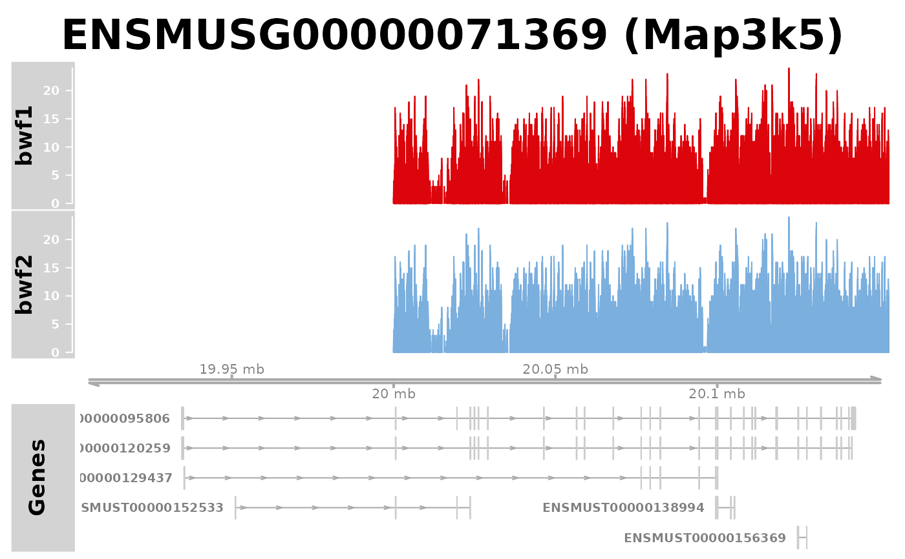

Visualize the gene model for a gene of interest, or for all genes in a provided region, and/or show one or more coverage tracks based on bigwig file(s).
plotGeneRegion( gtf = "", granges = NULL, chr = "", start = NA_real_, end = NA_real_, showgene = "", bigwigFiles = "", bigwigCond = "", geneTrackTitle = "Genes", transcriptIdColumn = "transcript_id", geneIdColumn = "gene_id", geneSymbolColumn = "gene_name", lowerPadding = 0.15, upperPadding = 0.05, colorByStrand = FALSE, featureColors = c(plusmain = "#0E14D0", minusmain = "#D0350E", plusother = "#9E9BEB", minusother = "#DA907E"), condColors = NULL, scaleDataTracks = FALSE )
Arguments
| gtf | Character scalar, path to gtf file (tested with Ensembl/Gencode files). |
|---|---|
| granges | GRanges object, typically generated from a GTF file using the
|
| chr | Character scalar, name of the chromosome to show. |
| start, end | Numeric scalars, start and end position of the region to show. |
| showgene | Character scalar, the gene ID/name to display. Will take precedence over positional range specification if provided. |
| bigwigFiles | Named character vector, paths to bigwig files. |
| bigwigCond | Named character vector, the grouping of the bigwig files (used for coloring of the coverage tracks). |
| geneTrackTitle | Character scalar, name of the gene track. |
| transcriptIdColumn | Character scalar, the column in the gtf file that
contains the transcript ID. Passed to |
| geneIdColumn | Character scalar, the column in the gtf file that
contains the gene ID. Passed to |
| geneSymbolColumn | Character scalar, the column in the gtf file that
contains the gene symbol (if available). Set to |
| lowerPadding, upperPadding | Numeric scalars, setting the amount of padding in the lower and upper range of the plot, respectively. For example, a value of 0.05 will expand the range by 0.05 * (max coordinate - min coordinate) in the specified direction. |
| colorByStrand | Logical scalar, determining whether gene features are colored by the annotated strand. |
| featureColors | Named character vector of length 4, with elements
|
| condColors | Either NULL or a named character vector (with the same
names as the unique values of |
| scaleDataTracks | Logical scalar, indicating whether the data tracks should be scaled to have the same y-axis limits. |
Details
The gene annotation can be provided either as a path to a gtf file, or as a
GRanges object (generated using the prepareGTF function to ensure
compatibility). The region to display can be determined either by
specifying a gene (ID or symbol) or by specifying a viewing range
(chromosome, start and end positions).
Author
Charlotte Soneson
Examples
gtffile <- system.file("extdata/plotGeneRegion/mm10_ensembl98.gtf", package = "swissknife") plotGeneRegion(gtf = gtffile, showgene = "Tnfaip3")bwf <- system.file("extdata/plotGeneRegion/mnase_mm10.bw", package = "swissknife") names(bwf) <- "bwf1" plotGeneRegion(gtf = gtffile, bigwigFiles = bwf, chr = "chr10", start = 20000000, end = 20005000)plotGeneRegion(bigwigFiles = bwf, chr = "chr10", start = 20000000, end = 20005000)bwf2 <- c(bwf, bwf) names(bwf2) <- c("bwf1", "bwf2") bwc2 <- c("c1", "c2") names(bwc2) <- names(bwf2) plotGeneRegion(gtf = gtffile, bigwigFiles = bwf2, bigwigCond = bwc2, showgene = "Map3k5")